Janet 快车箱
AI Daily Briefing
2026-06-21
VOL 264
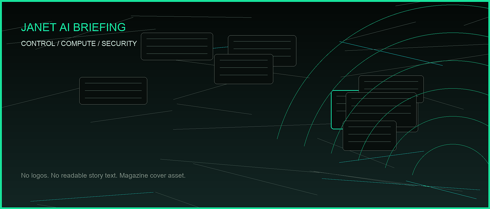
对中国创作者和企业，含义很现实：别再把 AI 当成一个聊天窗口采购。要同时算模型备份、推理成本、数据所在地、工具入口和政治风险；做产品的人要往真实任务、机器人控制、开发者桌面和健康/注意力管理这些高频场景里钻。
接下来 2-4 周盯三件事：Anthropic 的 Fable/Mythos 访问会不会恢复并附带新条件，Google DeepMind 的人才流失会不会继续打击 Gemini 节奏，推理云和主权算力融资会不会从高估值故事变成真实客户账单。
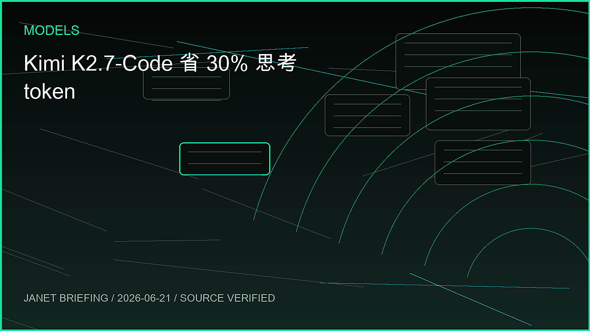
Moonshot AI 在 Hugging Face 发布 Kimi K2.7-Code，定位为面向长程软件工程任务的 coding-focused agentic model。模型卡称它基于 Kimi K2.6，提升真实长程编码任务表现，并让 coding 任务的 thinking-token 使用量约降低 30%。
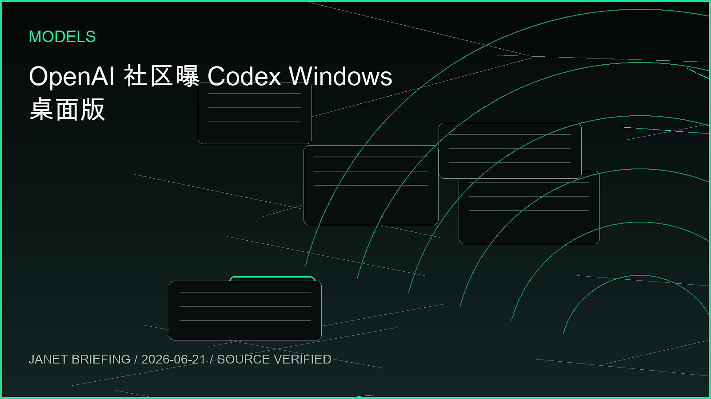
OpenAI Developer Community 6 月 20 日显示，Codex 分类下出现 “The Codex app is now on Windows” 公告帖，同时还有 Codex rate limits、Windows elevation、VS Code extension 等大量使用反馈。官方社区信息显示 Codex 正从 macOS/CLI 走向更广泛桌面入口。
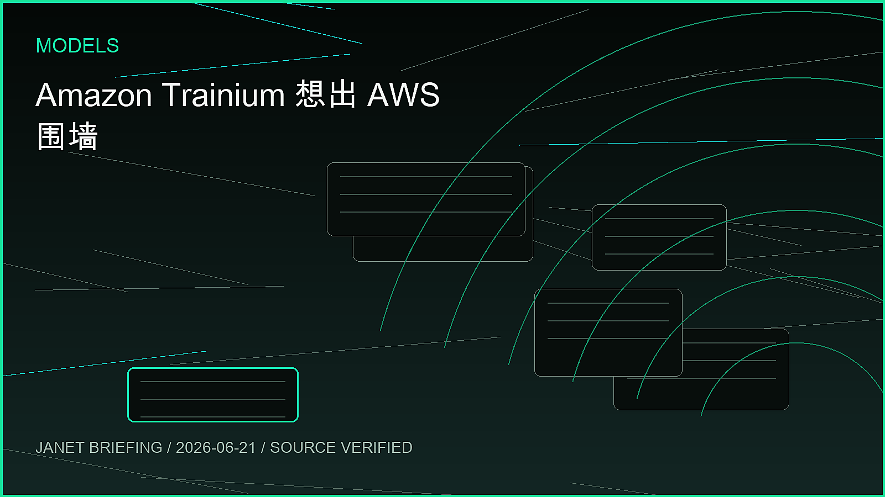
TechCrunch 报道称，AWS 正早期讨论将自研 AI 芯片 Trainium 卖给其他公司的数据中心，而不只在 AWS 内部使用。报道提到 Andy Jassy 曾称这类芯片机会可能达到 500 亿美元，AWS 过去更倾向通过云服务售卖芯片算力。
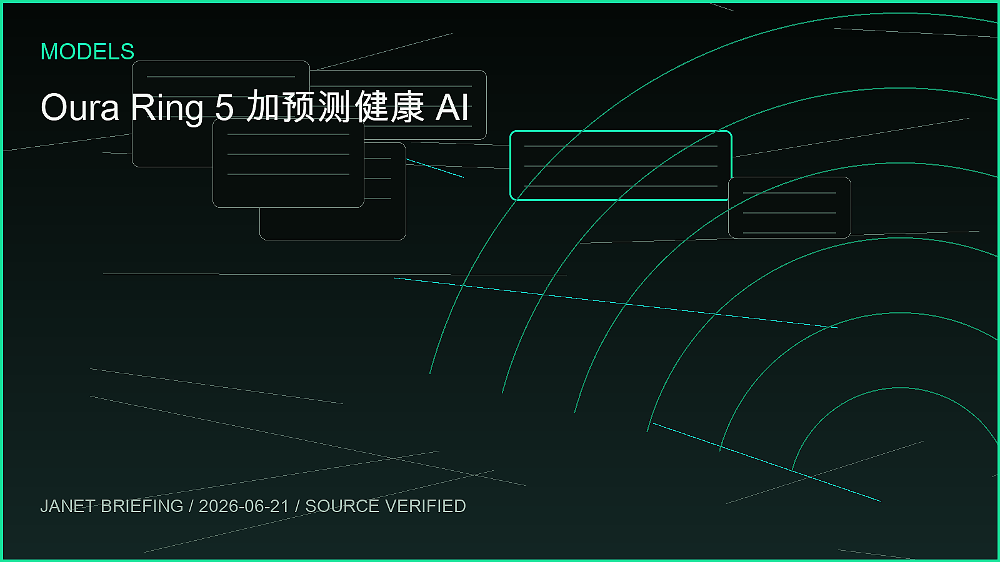
Oura 5 月底发布 Oura Ring 5，MobiHealthNews 报道其加入预测性心血管和呼吸健康监测、临床医生访问和长期健康追踪。BusinessWire 资料显示 GLP-1 Insights、Brain Health Study、Lab Uploads 等能力在 6 月陆续开放。
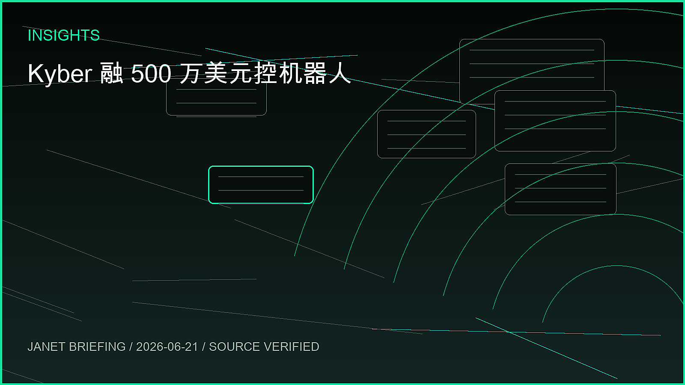
TechCrunch 6 月 19 日 5:47 PM PDT 报道，VLC lead developer Jean-Baptiste Kempf 创办的巴黎公司 Kyber 完成 500 万美元融资，Lightspeed 领投。Kyber 开发低延迟远程设备控制 SDK，用于同步视频、音频、传感器数据和控制输入，目标覆盖机器人与无人机。
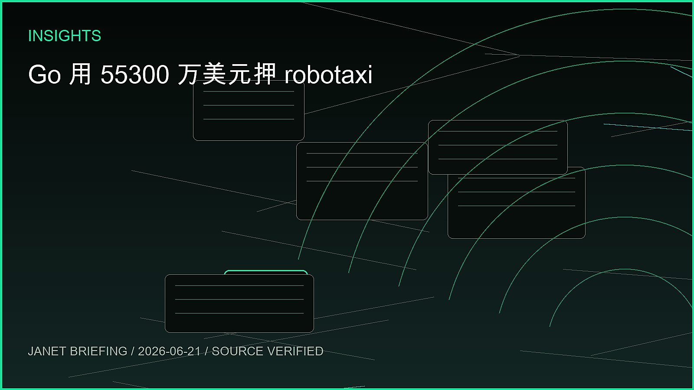
TechCrunch 6 月 19 日报道，日本打车平台 Go 完成今年日本最大 IPO，募资 886 亿日元，约 5.53 亿美元。公司表示将把新股发行所得用于 robotaxi 研发和业务扩张，包括出租车行业内外的战略并购。
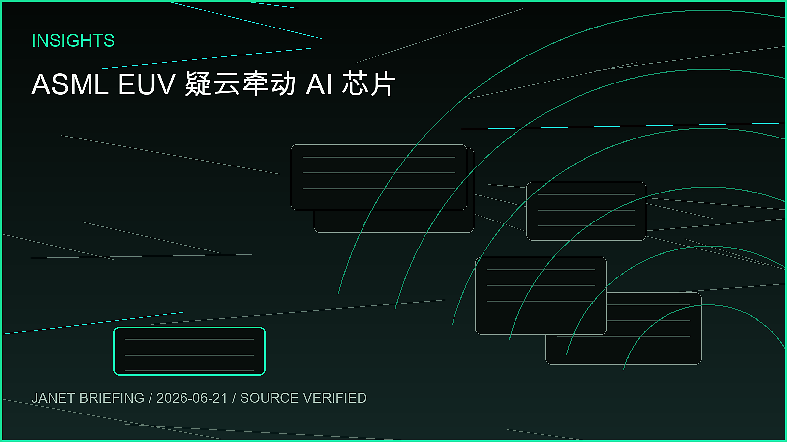
TechCrunch 6 月 19 日报道，美国商务部长 Howard Lutnick 近期告诉 ASML 高管，担心一台最先进 EUV 光刻机可能已进入中国。ASML 否认中国存在此类机器，且美国方面尚未公开证据。EUV 是先进 AI 芯片制造的核心设备。
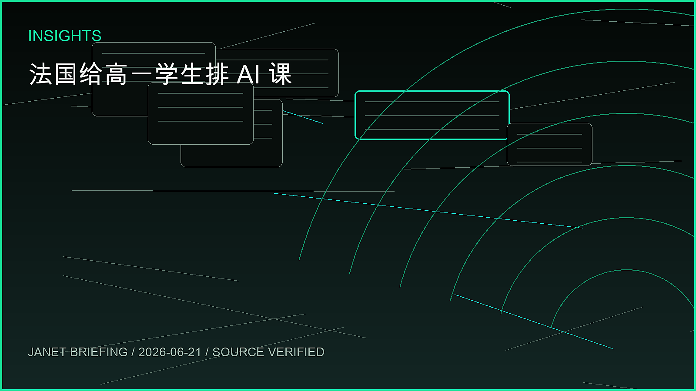
Reuters Connect 6 月 20 日图片资料显示，法国 Veranne 一所学校场景中，部长 Sebastien Lecornu 宣布 10 年级学生每周接受一小时 AI 教育。素材由 Hans Lucas 提供，主题为 back-to-school and AI。
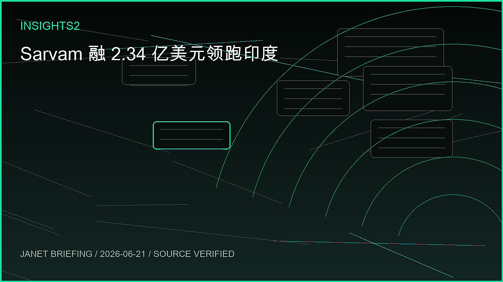
Economic Times 6 月 19 日报道，印度创业公司一周融资约 4.026 亿美元，AI 公司 Sarvam 以 2.34 亿美元投资领跑。该轮成为本周资金回升的核心事件，也把印度本土 AI 模型与应用推到更高估值牌桌。
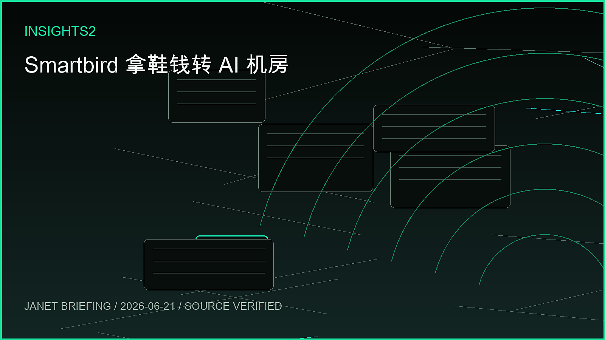
TechCrunch 6 月 19 日报道，Allbirds 出售鞋类业务 4300 万美元、又从市场融资 1 亿美元后转型为 AI infrastructure 公司 Smartbird。新任 CEO Nadia Carlsten 表示，公司将招募全新团队，面向需要数据主权和自控服务器的客户部署计算集群。
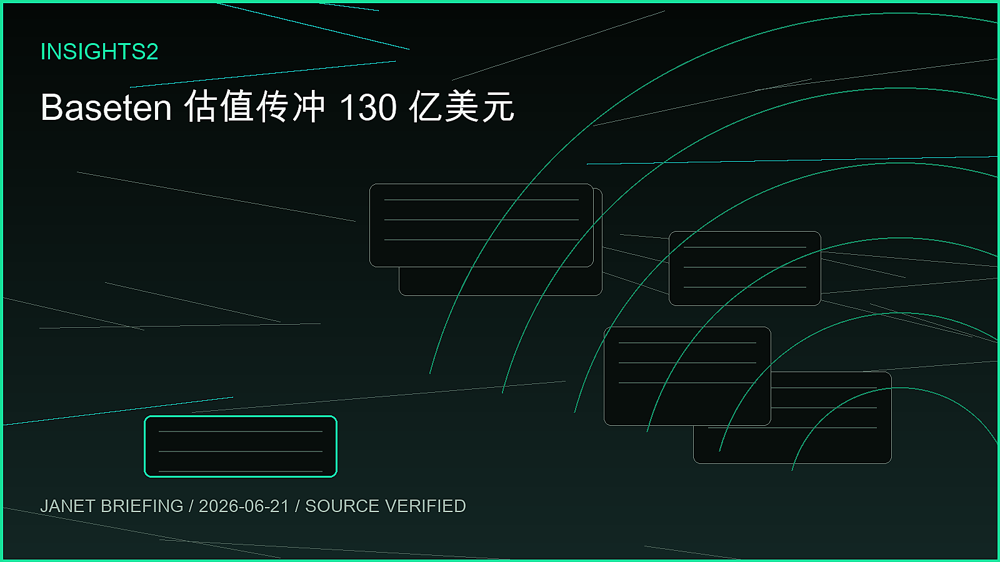
TechCrunch 6 月 18 日援引 WSJ 报道称，AI inference 公司 Baseten 接近完成 15 亿美元融资，估值约 130 亿美元。该公司五个月前刚完成 3 亿美元 E 轮、估值 50 亿美元，九个月前也曾完成 1.5 亿美元 D 轮。
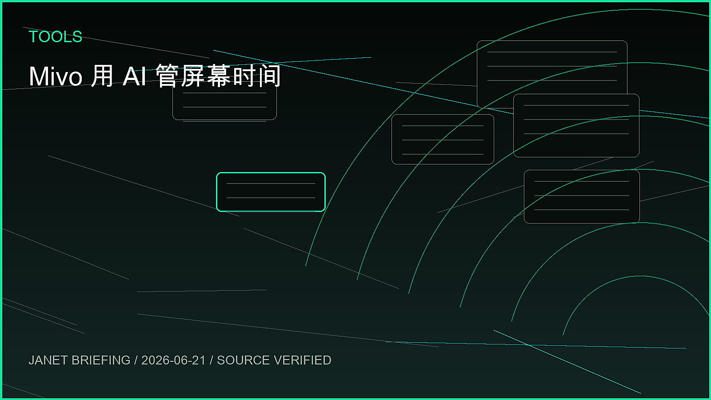
TechCrunch 6 月 18 日报道，Mivo 推出一款更 mindful 的 screen time 管理 app，主打帮助用户理解和调整手机使用习惯，而不是只粗暴封锁应用。产品方向体现了 AI 工具从生成内容转向管理日常注意力。